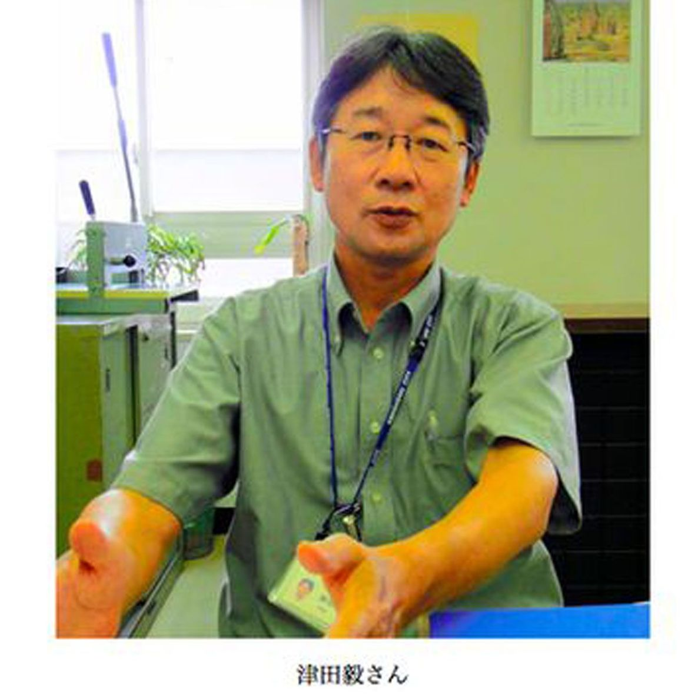
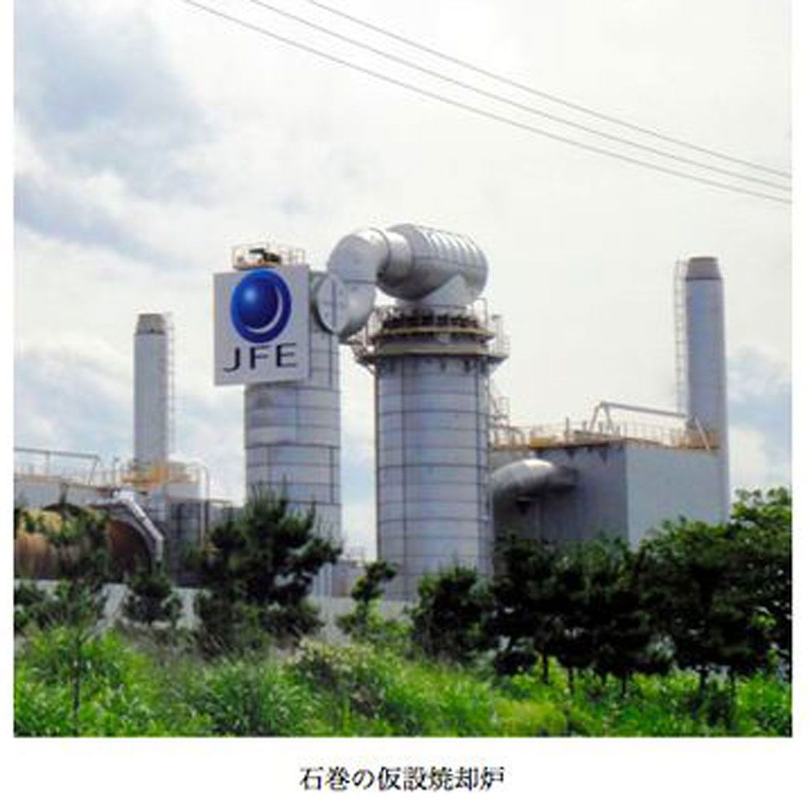

| プロメテウスの罠〔１７〕 がれきの行方「環境省がじゃまをする」 (朝日新聞デジタルＳＥＬＥＣＴ) | |
| 朝日新聞 | |
| (2013) | |
大震災と津波がもたらした「がれき」の処理が進まない。環境省は全国に受け入れ先を求める「広域処理」策を唱導するが、要請された自治体は、焼却処理などで高まる放射線の「国の安全基準値」に強い不信感を抱く。他方、被災地では費用と場所の軽減となる、がれきを利用した「防潮林」構想も出た。だが、環境省は広域処理にこだわり、その広報活動を東京の大手広告会社にまる投げ。現場を知らぬマニュアル頼みのずさんな対応に、自治体や地元住民は納得できたのか。
内容紹介
大震災と津波がもたらした「がれき」の処理が進まない。環境省は全国に受け入れ先を求める「広域処理」策を唱導するが、要請された自治体は、焼却処理などで高まる放射線の「国の安全基準値」に強い不信感を抱く。他方、被災地では費用と場所の軽減となる、がれきを利用した「防潮林」構想も出た。だが、環境省は広域処理にこだわり、その広報活動を東京の大手広告会社にまる投げ。現場を知らぬマニュアル頼みのずさんな対応に、自治体や地元住民は納得できたのか。
初出
朝日新聞 二〇一二年九月五日～九月二十七日
第１章 知恵を出そう
第２章 ３年で終わらせよう
第３章 ３千億円規模か
第４章 ボートを調達しろ
第５章 関西から助っ人
第６章 引き算はしない
第７章 受け入れられない
第８章 国の基準に戸惑った
第９章 納得できる説明を
第１０章 推計減っても県外へ
第１１章 防潮林をつくろう
第１２章 放置された提言
第１３章 小さな丘をつくろう
第１４章 広告会社を頼った
第１５章 取材の場を「演出」
第１６章 「ＰＲ記事なのに」
第１７章 「大幅修正が必要だ」
第１８章 大臣発言全て載せて
第１９章 １１０キロ離れているのに
第２０章 激務に耐えられるか
第２１章 分類で能率アップ
第２２章 国はマニュアル頼み
宮城県１６００万トン、岩手県６００万トン、福島県２９０万トン――。
２０１１年４月、環境省が推計した大震災のがれきの量は膨大だった。その一部を全国で処理する「広域処理」の発想は、どう生まれたのか。
当時の環境相、松本龍（まつもとりゅう）（６１）は「私が指示しました」と語る。
１１年３月１１日の震災発生時、松本は参院決算委員会に出席していた。強い揺れが来た。
防災担当相を兼ねていた松本は、ただちに首相官邸地下の危機管理センターに向かった。
それから１週間、松本はセンターに詰めきりだった。被災地の様子は、自衛隊のヘリからの映像などで確認した。
震災から数日後に、環境省政務官の樋高剛（ひだかたけし）（４６）を呼んだ。樋高は災害廃棄物対策特別本部長でがれき処理の責任者だ。
「全国の廃棄物処理場の処理余力を調べてくれ。がれきを埋められそうな場所も。公有地のほか、使われなくなったゴルフ場とか民有地も探してほしい。知恵を出そう」
これが「広域処理」の動きの、そもそもの始まりだった。
松本は１９９５年の阪神大震災でがれき処理に関わっている。当時は自民・社会・さきがけの連立政権下で、与党社会党の衆院議員だった。
震災から１週間後、地元の博多から船で神戸市に入った。
野球帽に厚手のジャンパー。議員バッジは外した。２日間、神戸の町を歩き回り、道ばたに座り込んでいる被災者の話を聞いた。
「戦後の焼け野原のようになっていました」
東京に戻ると与党災害復興プロジェクトチームの座長に任命された。
阪神では、被害が特定の地域に集中していた。津波もなかった。人手があり、大きな処分場があった。
「そのため、早い時期からがれき処理が進んでいきましたね」
大部分は兵庫県内や隣の岡山県で処理され、神奈川や埼玉など遠隔地に運ばれたのはわずかだった。
しかし東日本大震災の場合は桁違いだ。津波で役場ごと流された町もある。松本は「これは被災地だけでは処分しきれないな」と直感した。
この時点で松本は、放射能が大きな問題になるとは思いもしなかった。
震災直後、大臣の松本龍からがれきの広域処理の仕組みづくりを命じられた環境省は、その方向で動く。
まず２０１１年３月１８日、がれきの受け入れを要請する文書を北海道や秋田県、東京都など１０都道県の知事に送った。
１１年４月８日、全国の市町村に、がれきの処理余力を尋ねるアンケートを送った。５７２の市町村が「余力あり」と答え、それを基にして環境省はこんな計算を立てた。
広域処理で年最大２９０万トンのがれきを燃やし、１１０万トンを埋め立てることができる――。
阪神大震災ではほぼ３年でがれきを処理できた。それ以上のがれきの発生が見込まれる東日本大震災でも、広域処理の仕組みを使えば３年以内で処理できるのではないか。３年以内で埋め立てまで終わらせよう、と環境省は考えていた。
福島県のがれきについては、放射能汚染が予想された。どう対応するかを専門家や環境省幹部が話し合う検討会が、１１年５月から始まった。宮城や岩手は当初、対象外だった。
松本はいう。
「放射性物質の拡散のおそれが、岩手や宮城のがれき処理にまで影響を及ぼすなどということは、当時は想定もしていませんでした」
しかし、５月下旬から関東のあちこちで局地的に高い放射線量が計測され、不安が広まった。ゴミ焼却炉の焼却灰からも高濃度の放射性物質が検出される。「福島以外」のがれきにも警戒心が強まった。
１１年９月、鹿島を中心とする共同企業体が宮城県石巻市と東松島市、女川町のがれき処理を請け負った。鹿島らは、広域処理で４割を片付ける計画を立てた。各地の業者に声をかけ、企業同士で話をつけた。
廃棄物の持ち込みには相手自治体の許可がいる。鹿島の計画を受け、宮城県が相手県にがれきの受け入れを打診した。ところが、懸念していたことが現実になる。
県震災廃棄物対策課によると、相手県の答えはこうだった。「放射能汚染への恐れが強まり、住民の理解を得るのが難しい」
雲行きは変わっていた。
全国各地でがれき受け入れの話が持ち上がるたびに反対の声が上がった。「受け入れ可能」と答えていた市町村も、態度を変え始めた。広域処理は行き詰まった。
広域処理の指示をした環境相の松本は、その前の１１年６月に大臣を退任していた。
宮城県石巻市は、市町村の中で群を抜く量のがれきを抱えている。
環境課長補佐の三浦智文（みうらともふみ）（５３）に、コンサルタント業者が、市のがれき処理費用の大まかな見積もりを伝えたのは、震災から１カ月後の２０１１年４月２０日だった。
「３千億円規模か」
三浦はうなった。市の年間予算は約６１７億円。その５倍近くにのぼる。恐ろしい数字だ。
その金額が出るまで、三浦は市で自力処理するつもりだった。
１１年３月１１日以前、石巻市には約１１万棟の建物があった。地震と津波で、そのうち約３万棟が全半壊した。
石巻市の被害は大きく、発生したがれきは６１６万トンと推定された。宮城県全体の３分の１以上に当たる。岩手県１県分より多い。
それは市が通常で処理するごみの１０６年分だ。それでも三浦は「やるしかない」と思っていた。
仮設焼却炉を１５基、港の工業用地などに建てよう。お盆の前には火入れをする。それでしゃにむにがんばれば、環境省がいう「３年以内」でかたがつくのではないか。
そんな青写真を描いていた。その前に立ちはだかったのが「３千億円」だった。金額を聞いた時点で自力処理の線は消えた。
「県に頼むしかない」。市長の亀山紘（かめやまひろし）は決断した。
１１年４月２２日、亀山と市生活環境部次長が県に出向いて頭を下げた。
がれきの収集は市がするが、その先の処理をよろしく――。
県環境生活部長の小泉保（こいずみたもつ）は「分かりました」と引き受けたが、内心は「これは大変だぞ」だった。
宮城県内のがれき量は１６００万トン。処理費用がどうなるかは県にとっても大問題だった。国が最初から全額負担して、面倒な事務作業もなくなるよう国の直轄事業にして欲しい。交渉は６月まで続いた。
その間にも、石巻の処理施設建設予定地に次々にがれきが積み上げられてしまった。これでは、がれきの選別施設すら建てられない。
埋め立て処分場も足りない、と県は広域処理の利用を考えた。事業公募した複数のゼネコンからも広域処理案が出されたため、１１年９月、県は石巻と東松島市、女川町のがれき処理を鹿島を中心とする共同事業体に委託、受け入れ地の拒否で頓挫する。
松本龍と同じく、三浦もがれきが放射能汚染と結びつくなどとは、それまで夢にも思っていなかった。
震災があった２０１１年３月１１日、宮城県石巻市環境課長補佐の三浦智文は、公休を取って車で仙台市に出かけていた。あわてて石巻に戻ったが、道路は大渋滞。市中心部は冠水している。車を高台に止め、腰まで水につかって歩いた。市役所にたどり着いたのは夜の９時すぎだった。
それからしばらくして、また津波が来た。１階が水没し、周りは海になった。避難してきていた３００人ほどの市民とともに、役所の建物に閉じ込められた。
翌３月１２日昼、市の総務部長が職員２人を呼び出した。１人は、カヌーで国体出場の経験があった。
「スポーツ用品店かどこかでボートを調達してきてくれ」
食料も底をつき、外から運搬する必要に迫られていた。
「店が閉まっていたら蹴破ってもいい。私が責任をとる」
２人は濁った水に入り、足で地面を探りながら１時間半、歩いた。２キロほど西で水が途切れた。そこに大型釣具店があった。店に事情を話し、後払いで４人乗りのゴムボートを手に入れた。
市役所の非常階段を船着き場にして、外部との行き来ができるようになった。
三浦はそのボートと徒歩で、４キロ離れた市営火葬場が使えるかどうか見に行った。多数の犠牲者が出ており、遺体の火葬が緊急の課題となることは明らかだったからだ。
このとき初めて、津波で破壊された石巻の町並みを目にした。
流され、押しつぶされ、柱や瓦、壁がごちゃまぜになった家。建物がさらわれ、むきだしの土台。何台も折り重なった車――。そんな光景が何キロも続いていた。
この処理はどうするんだ。
しかし、とにかく今は人間が先だ。ごみ処理を担当する環境課の職員は三浦を入れて５人。それが犠牲者の対応にかかり切りとなった。
震災から２週間で、遺体は２千を超えた。安置所を設けたが、遺体をくるむ布がない。選挙で投票箱の下に敷く白い布や、市立病院の予備のシーツをかき集めた。
市の火葬能力は日に９体が限度。墓地の空きスペースや市民広場に穴を掘り、仮埋葬した。
市役所の床に段ボールを敷いて眠り、食事は支援物資のおにぎりだけの日が続いた。
三浦ががれき処理に専念できるようになったのは、震災から１カ月後だった。
６００万トンを超えるとされた石巻市のがれきの推定量は、いつ、どうやってカウントしたのだろう。
市環境課長補佐、三浦智文ががれき処理に専念出来るようになったのは２０１１年４月に入ってからだ。それまで三浦は、全体でどれほどのがれきがあるのか分からなかった。
とにかく始めなければならない。量にひるんでいる時間はなかった。
バイオマス発電機を持つ製紙会社や合板会社の工場に木材がれきを引き受けてもらう検討を始めた。
プラントメーカーに、がれきを燃やす仮設焼却炉として、すぐに使える中古の炉を探してもらった。
石巻市は海に面した山がちな町で、がれきの仮置き場に使える平地が少ない。がれきの片付けと同時進行で焼却や粉砕を進めないと、処理が行き詰まってしまう。
分からない問題は、環境省の職員に尋ねた。たとえば、業者にがれき処理の仕事を発注するための単価とか、海水を含んだ畳などこれまで扱ったことのない種類の廃棄物の処理法だ。
しかし確たる回答は得られない。目の前に次々に出てくる問題に、体当たりで取り組むだけだった。
そんな状態の１１年３月２９日、関西から応援が来た。兵庫県の尼崎市公害対策課長の津田毅（つだたけし）（５５）だ。関西広域連合から派遣された。

石巻市での津田の仕事は、がれきの量の推計と、処理計画づくりへの助言だった。
津田は１９９５年の阪神大震災のとき、尼崎市の環境事業部管理課主任として、がれきの量の推計から最終処分までを手がけている。その経験を買われた。
尼崎からバスで１８時間。石巻に到着すると、その足で日和山に登った。被害を受けた港湾部が一望できる。そこから被災地を眺め、地形や被害の概略を頭に入れた。
翌日、ワゴン車で市内を回り、がれきの実態を確認した。
何が、どのような状態で、どれほどの量のがれきになっているのか。それがどう分散しているのか――。
阪神で生じたがれきは、その場で倒壊した建物がほとんどだった。しかし石巻は、津波の被害が中心だ。流され、かき回され、家も車も船も一緒だ。そこにヘドロまで積み上がっている。
これは阪神のときとはまったく違う。さあ、どうやってがれきの量をカウントしよう。津田は「虎の巻」を取り出した。
石巻市に応援に来た尼崎市の公害対策課長、津田毅は、貴重な「虎の巻」を持ってきていた。
阪神大震災のがれき処理を担当したとき、自分でつくった処理計画の工程表や、兵庫県によるがれき処理の資料だ。
この資料が、石巻のがれき量を集計するのに役立った。
たとえば１軒の住宅が全壊したときに、どのぐらいのがれきが生じるのか。その家の構造や延べ床面積が分かれば計算できる。
木造住宅では、床面積１平方メートルあたり重さ約７００キロのがれきが生じる。阪神大震災のときの経験値だ。鉄筋では約１１００キロ、鉄骨なら約７１０キロだ。
全壊した建物の棟数は石巻市が調べていた。市の固定資産課税台帳には、建物１軒ごとの延べ床面積や建築構造が記されている。建物が全壊した地域を住宅地図と照らし合わせていけば、建築がれきの量が推計できる。
次は流された車の量だ。陸運局はトラックや乗用車、軽乗用車といった種別に保有台数を集計している。交通量調査の数字も用い、津波が襲ったときに何台ぐらいの車が被災地域にあったのかを推測した。
ヘドロの重さは、丁目などで区切った地区ごとに厚さをはかり、その地区の面積とヘドロの比重をかけ合わせた。
詳細に推計するには２、３カ月はかかる。津田は石巻に滞在する１週間で概略だけでも出そうと急いだ。総量のおおよそが分からなければ、処理計画が立てられないからだ。かけ算と足し算を繰り返し続けた。
どうしても、求めることが出来ない数字もあった。津波が海にさらっていったがれきの量だ。
それは推計量から引くべき数字だ。だが、津波でどれだけのがれきが海に引きこまれたのか分からない。手がかりがなかった。
海にさらわれたとしても、後に海中から引き揚げて処理する分もあるはずだ。そう考えて、引き算はしないことにした。
阪神大震災のとき、尼崎市では推計したがれきの量よりも実際に発生した量の方が多く、国の補助金が足りなくなった経験も頭をよぎった。
津田は推計量を伝える際、そうした事情を石巻市の関係者に告げ、尼崎に引き揚げた。
６００万トン超という石巻市のがれきの推計量は、こうして出てきた。
がれきの広域処理が停滞した背景には、国に対する、受け入れ自治体側の強い不信感があった。
たとえば――。
環境省の災害廃棄物対策特別本部は、２０１２年３月１８日に北海道から神奈川までの１０都道県知事にがれき受け入れを要請した。だが要請の内容は漠然としていて、市町村への伝達を求めるくだりもなかった。
必然的に、受け入れ要請は市町村には届かなかった。札幌市長の上田文雄（うえだふみお）（６４）は「国の要請は今年（１２年）の３月１６日に初めて受けました」という。１年ものギャップがある。
上田によると、この１年間に環境省から２回のアンケートがあった。
１回目は１１年４月８日で、がれきを受け入れた場合のごみ処理余力がどの程度あるかを尋ねられた。
札幌市は約３万９千トンの余力があると答えたが、「受け入れる」とは答えていない。受け入れの可否は問われていなかったからだ。
そのため回答にはわざわざ「実際の受け入れに際しては住民の同意を得る必要がある」と付記した。
しかし環境省の理解は違った。廃棄物・リサイクル対策部長の伊藤哲夫（いとうてつお）（５８）は、この結果をもとに１１年６月１０日の国会答弁で「５７２の市町村、一部事務組合等から受け入れの表明がございまして」と述べた。
２回目のアンケートは１１年１０月７日。このとき、受け入れを検討しているか聞かれた。１回目で「受け入れ余地あり」と答えた自治体が対象で、札幌市もその中に含まれた。
札幌市は「国から示されている基準や指針だけでは、安全の確証が得られる状況にない」と指摘した。しかしそれについて、環境省からは何の問い合わせもなかった。
このアンケートで「すでに受け入れている」か「具体的な検討をしている」と答えた市町村は、１１年１１月時点で計８にとどまった。
そして１２年３月１６日。首相の野田佳彦（のだよしひこ）と環境相の細野豪志（ほそのごうし）の名で、札幌市長・上田文雄宛てに初めて、がれきの受け入れを要請する文書が送られてきた。
上田は「安全に処理することが可能ながれきについては受け入れの用意がある」とした上で、「国の示した基準や指針では安全の確証は得られない。安全性が明確でないがれきは受け入れられない」と１１年１０月の指摘を繰り返し伝えた。
札幌市だけではない。新潟県や長野県も、同じ懸念を表明した。
環境省のがれき受け入れ要請を受けた新潟県知事の泉田裕彦（いずみだひろひこ）は「国の放射能に関する安全基準に問題がある」と質問を送った。
長野など６県の知事も「安全性の基準について十分な情報公開と対策をしてほしい」と申し入れた。
自治体側が「国の基準」なるものに不信感を表明したのだ。
問題の「基準」。重さ１キロあたり８千ベクレル以下の放射能濃度のがれきなら、水が漏れ出さない仕組みの「管理型処分場」に埋め立て処理できるというものだ。
この基準は、２０１１年５月につくられた「災害廃棄物安全評価検討会」で決まった。
検討会は、福島県のがれきをどう処理するか決めるため設置された。
環境省が指名した大学教授や国立環境研究所の幹部ら７人の委員に、環境省から事務次官の南川秀樹（みなみかわひでき）や官房長の谷津龍太郎（やつりゅうたろう）が加わった。
環境省によると、「８千ベクレル」という値は、ごみ処分場の作業員が１日４時間、年２５０日作業をしたとして、年間被曝（ひばく）線量が国が定めた１ミリシーベルト以下におさまると計算して定めたという。
しかし、これまでの「原子炉等規制法」では、１キロあたり１００ベクレルを上回る廃棄物は、放射性物質として専用施設で管理することとされている。
規制法は原子炉などの大量の解体がれきを公園のベンチなどにリサイクルするケースを想定しており、災害がれきの埋め立てとは前提が異なる。しかし自治体は、その値の違いの大きさに戸惑った。
検討会の討議の議事録は当初、非公開だった。国会で公開が求められ、１２年３月にようやくホームページで公開されたものの、８回目から１１回目は録音もされていなかった。
不安材料となる出来事もあった。
群馬県伊勢崎市で１１年９月、管理型処分場から排出された水の放射線量が、国の許容量を超えたのだ。
市内の通常ごみの焼却灰の上に雨が降り、染み出た水を濾過（ろか）処理し、利根川に流す。そこで検出された。
この処分場に埋められた焼却灰の放射能濃度は、国のいう「８千ベクレル」の５分の１程度だった。にもかかわらず、許容量を超えた。
「国がいう『安全』は、全く信用できません」
石巻市からのがれき受け入れを決めた北九州市で、受け入れに反対する若松区の整骨院職員、藤井（ふじい）あつみ（２９）は怒る。
２０１２年８月２６日、がれきの広域処理についての市民勉強会が、北九州市戸畑区で開かれた。整骨院職員の藤井あつみは、５歳の長男と１歳の長女を連れて参加した。
２０１１年３月の原発事故以後、藤井は食べ物への影響や子どもたちの健康被害を気にするようになった。
政府は事故直後、「ただちに人体に影響を及ぼす数値ではない」と繰り返した。その不信がある。
そこにがれきの広域処理である。市は国の基準値を下回る重さ１キロあたり１００ベクレル以下のがれきだけ受け入れることにしている。藤井は「放射線量が低くて安全といっても、それは確認できていない。全国に散らしてはいけません」という。
焼却という処理方法にも不安を感じる。灰には放射能が凝縮する。煙にまじって放射性物質が飛散する可能性もある。
国は「フィルターで９９・９％除去出来るので安全」という。しかしこれまでの経緯を見ていると、その言葉が信じられない。
「早く処理しないと被災地の人の健康にも影響が出る。福島第一原発のそばなど人のいないところに持って行き、より安全な処理をしてほしい。焼却せずに埋め立てるとか」
同じ勉強会に、戸畑区の浦山野生（うらやまやせい）（３１）もいた。勤めを辞めて司法書士の受験準備をしている。
浦山は、１１年９月に東京都ががれき受け入れを表明した際は「広域処理は必要」と思っていた。
その後、低線量被曝（ひばく）でも被害の可能性があると知り、考えが変わる。
「これ以下なら安心といい切れる値はない。政府が安全といい切っていいのか。政府は、放射性物質の拡散をできるだけ防ごうとするべきではないかと思うのです」
１２年５月２３日、北九州市は宮城県石巻市のがれき８０トンを、市内の焼却場で試験焼却し始めた。灰や煙の放射性物質の濃度を測るためだった。
がれき受け入れに反対する市民約１００人が市役所に詰めかけた。浦山もこの中にいた。市は職員１５０人で人垣をつくり、騒然とした。
浦山にも、被災地の復興を助けたいという気持ちは強い。だが、国や市が住民に納得できる説明をしないまま、広域処理を押し通そうとしていることへの不信感がつのる。
新たな不信の種も出てきた。
がれきの量が推計よりかなり少なく、広域処理をしなくてもすむのではないかと見られるようになったのだ。
２０１２年５月２１日、宮城県と岩手県はがれきの量を見直した。１１年４月の環境省の推計値から大幅に減った。
宮城県１１５４万トン（１１年４月で１６００万トン）、岩手県５２５万トン（同６００万トン）。津波が海にさらっていった分が引き算されたのだ。
宮城県が石巻市と東松島市、女川町から処理を引き受ける量も６８５万トンから３２４万トンへと３６０万トン以上も減った。
宮城は当初、石巻のがれき２９４万トンを広域処理する計画でいたが、それ以上に減ったことになる。
北九州市に近い、福岡県宗像市でがれきの受け入れ反対運動をする整体師の荒川謙一（あらかわけんいち）（６２）はいう。
「石巻の量はまだ多いけれど、これなら他県に持ち出さなくても、県内で焼却処理できるはずです」
処理能力もあがっている。
宮城県では震災後、沿岸部の自治体で２２基の仮設焼却炉が稼働を始め、残り７基が１２年１２月までに完成する予定だ。１日合計４４９５トンのがれきを燃やせるようになる。
県はそれでも３年以内の処理終了には石巻の可燃物２２万トンの県外処理が必要といい、北九州市は最大約６万３千トンを引き受けることにした。
一方で県はすべての炉の解体を２０１４年１月中旬までに始める予定だ。稼働期間を２カ月延長すれば、広域処理をしなくてもすべて県内で焼却処理できる計算になるのだが。
広域処理だと費用は高くつく。
仙台市はすべて市内で自力処理している。その処理費用は、１トンあたり４万円弱と見られる。
しかし、北九州市まで運ぶと、経費は当然高くなる。
北九州市が石巻のがれきを試験焼却したとき、８０トンをトラック２８台で運び、１４００万円かかった。運送費だけで１トンあたり１７万５千円もかかっている。
１２年８月７日、環境相の細野豪志は記者会見で、北九州市での広域処理について「コストも、まとまって受けていただく場合には、かなり抑えることができます」と話した。
本格的な受け入れではコンテナ船で運び、１トンあたり８万円弱の処理費用になる見込みだ。
荒川の疑問は晴れない。
「それでも８万円は高い。なぜ石巻から千キロも離れた北九州での、がれき焼却にこだわるのでしょうか」
国はいったん決めたことについては、状況が変わろうが住民が被害を心配しようがお構いなし――。そう怒る人々が出てきている。
「広域処理に頼るのはやめたらどうか」――。そんな声は宮城県議会からも出はじめた。
２０１２年６月２８日の県議会定例会。質問に立った自民党県議の相沢光哉（あいざわみつや）（７３）は指摘した。
「広域処理が誘発した放射能汚染をめぐる住民感情のあつれきと風評被害の拡大などを考えると、今回のがれきの処理方式が本当に正しかったのか、大いに疑問である」
大量のがれきの処理を広域処理にゆだねる方法が「唯一、正当かつ有効な選択肢であるとは思えない」と相沢はいった。
それに対し県は、がれきの量が減ったとしても、１１４万トンの県外処理が必要だと答えた。
理由として、（１）仮設焼却炉２９基がすべて稼働しても３年以内では処理が終わらない（２）リサイクルできる木材などの利用先が県内では限られる（３）埋め立て処分場の容量に余裕がない、を挙げている。
しかし相沢には、その問題を解決できるアイデアがあった。「いのちを守る森の防潮堤」構想だ。
がれきの中からコンクリートや木の無害なものを選ぶ。放射能濃度や化学物質が安全基準内のものだ。それを土と混ぜ、高さ２０～３０メートルの丘を築く。その丘に、タブノキや山桜など、それぞれの土地に根ざした広葉樹を植えて防潮林をつくる計画だ。
この防潮林を被災した沿岸部のあちこちにつくっていけば、かなりの量のがれきを処理できる。
がれきの丘に木が育ってしっかり根を張れば、いつかまた津波が来てもそのエネルギーをそいでくれる。人々の避難所にもなる。
「燃やせば何も残らない。だが防潮堤にすれば、人々の生活の一部であったがれきが、津波の教訓とともに、千年先まで生かされる」
相沢は県議会の各会派に説いて回った。すべての会派が賛成した。
１２年３月、５９人の県議全員が参加して推進議員連盟が発足した。連盟は国会や環境省、国土交通省、林野庁などに働きかける。
６月、環境省は「ゆっくり腐るので、メタンガスなどの発生のおそれが小さい」として、丸太状の流木などの埋め立ては認める「考え方」を示した。だが、木くずや建築資材はガスの発生や地盤沈下、有害物質を含む可能性を理由に認めなかった。
これに対し、「検討が不十分だ」と怒る植物生態学者がいる。「森の防潮堤」のそもそもの提唱者、宮脇昭（みやわきあきら）（８４）だ。
植物生態学者の宮脇昭は、がれきを埋めて防潮林をつくるアイデアを２０１１年４月、首相の諮問機関である国の復興構想会議に提案した。
宮脇は横浜国立大名誉教授で、４０年ほど前から国内やブラジルのアマゾン、中国など世界各地で植林活動を続けている。
理想は「その土地に古来根付く多様な木々での森づくり」だ。
日本ではタブノキやシロダモ、ヤツデなど。これらの木々が茂る森林は、杉など１種類の針葉樹が中心の人工林に比べて災害に強く、防災林にもなると説明する。
宮脇は震災から１カ月後の１１年４月、三陸沿岸の被災地を回る。津波でどんな木が被害を受け、どんな木が無事だったのかを調べた。
タブノキやシイなど、三陸沿岸にもともと生えていた種類の樹木が残っていた。人工林の松林は多くが根ごと流された。
がれきを埋め、その上に土地古来の木々を植えた丘をつくる。それはがれきを処理すると同時に、津波を柔らかく受け止める防潮堤になるはずだ――。
木材などを含むがれきで丘をつくると、腐敗して土地の強度が落ちるのではないか。そんな意見もあった。それに対し宮脇はいう。
「がれきをおおまかに砕いて土や砂と混ぜ、ほっこりと盛れば通気性が維持される。木片はゆっくり分解されて、木の養分になる。地面は１０～２０年間で５～１０％沈下して安定し、強度は確保できます」
宮脇は環境省にも１１年５月、この構想を伝えた。しかし、環境省はそれを１年間、なおざりにしてきた。
提言をどのように検討してきたのか。こちらの質問に対し、環境省広報室は明確な経緯を示さずにいる。
だが、「構想」は宮城県議会で盛り上がった。さらに、元首相の細川護熙（ほそかわもりひろ）らが市民の寄付を募る財団をつくり支援に動き出した。環境省は放置しておくわけにいかなくなった。
１２年６月、環境省は丸太状の流木などの埋め立ては認める「考え方」を示した。ただし「木くずや建設廃材は認めない」。汚水や腐敗してガスを発生させるし、有害物質を含む可能性があるからだとした。
宮脇は「世界各地で３０年以上、合板の端材などを土に混ぜて埋め、植林している。通気性を保つのでガスなど発生したことはない」という。
「がれきは１年以上雨ざらしで、有害物質が流されたものもある。調査し再検討して欲しい」
環境省のもたつきをよそに、独力で「がれき防潮林」づくりを進めてきた自治体がある。石巻市から約６０キロ南西の宮城県岩沼市だ。
岩沼市は１８５人の犠牲者を出し、２３４２世帯が全半壊した。発生したがれきは推計３２万トン。
２０１１年５月、復興構想を話し合う会議が始まった。そこで議論になったのは、同じ被災地でも松島町は津波の被害が軽かったことだった。
沖合に小さな島が点在している。それが津波の力をそいだのではないか――。
津波対策に巨大堤防を築くより、沿岸部の陸上に小高い防潮林を点在させてはどうだろう。土台にはがれきを埋め、津波被害を後世に伝える鎮魂の丘にしよう。
「千年希望の丘」と名付け、１２年８月にまとめた市復興計画のグランドデザインに取り入れた。植物生態学者の宮脇昭はこの構想を知り、協力を申し出た。
１２年５月、試験的に小さな丘をつくった。流木やコンクリート片など８０トンのがれきを埋め、３千本を植樹した。約８００万円かかった。それは市民からの寄付でまかなった。
環境省は「ごみ処分場の届け出を出せ」と渋ったが、「市の責任で試験的にやるのなら」と了解した。
今後、がれき３２万トンのうち４万トン以上を防潮林用に使う予定だ。
岩沼市長の井口経明（いぐちつねあき）（６６）は「この構想をぜひ実現したい理由があるのです」という。震災のとき、３人の市民が、海岸沿いの公園の築山に避難して津波から助かったのだ。
１１年３月１１日午後、公園の管理事務所の副所長だった茶谷仁一郎（ちゃやじんいちろう）（６３）は、園内の遊具の修理を終えたとき、揺れに襲われた。
揺れがおさまった。茶谷は園内に人が残っていないか確認し、高さ１０メートルほどの築山に避難した。
公園を管理する団体の臨時職員だった後藤（ごとう）ひろみ（３５）は管理棟を飛び出した。公園の近くに住む菊地節子（きくちせつこ）（７７）が逃げてくるのを見て駆け寄った。後藤は菊地に寄り添い、築山に向かうスロープを登り始めた。
その頃、茶谷は海の方から「バキバキバキバキ」とものすごい音がするのを聞いた。津波が松林を襲い、木が折れた音だった。
スロープを駆け下り、菊地をおぶった。３人が築山を登りきってすぐ、津波が周囲をのみ込んだ。家も車も流れていった。３人は築山で一夜を過ごし、翌日、消防団に救助された。
環境省は防潮林へのがれき活用には冷淡だった。しかし、自らが構想した広域処理には熱心に動いた。
その方針に従い、宮城県や岩手県ではがれきの１割以上を県外処理する計画を立てた。これで環境省がいう「３年以内の処理」に間に合わせることができるのではないか。
その上で宮城県は２０１１年９月５日、環境省の聞き取り調査に対し、こう答えた。
――広域処理に関して放射能が大きな問題だ。
――打診した反応では、西日本ではほとんど受け入れられないのではないかと考えている。
――環境省のガイドラインでは受け入れ先を説得できない。広域処理のためのエージェントが必要だ。
こうした要望を受けて環境省が頼ったのは、広告会社だった。
１１年１１月９日、環境省はがれきの広域処理や除染についての広報企画案を公募した。
電通と博報堂、東急エージェンシーの広告３社が応募し、博報堂の案が採用された。公募は２０１２年度も行われ、電通が選ばれた。
業務は広域処理と除染の広報、除染情報プラザの運営などだ。博報堂に約９億６千万円が支払われ、電通とは計約３０億円の契約が結ばれた。
その多額の予算で、広告会社は何をしているのだろうか。
手もとに、博報堂が１２年３月３１日、環境省に提出した業務報告書がある。文書の一部をそのまま記載する。
「除染、並びに災害廃棄物の広域処理に関して、まず報道論調を共有し把握することからはじめた」
博報堂が下請けに出した広報会社が、「広域処理」「除染」「原子力規制庁」に関する新聞記事やテレビ番組についてのリポートを、環境政務官の高山智司（たかやまさとし）（４２）らに毎朝、電子メールで送っている。
「そのうえで、大きな誤認報道とネガティブ報道、説明不足報道、好意的報道にその場で分類した」
「誤認報道」については、そのメディアのディレクターや主筆クラスに接触し、誤認の指摘をした、としている。しかし、どのメディアにどう誤認指摘をしたのか、具体的な記載はない。
「除染、並びに災害廃棄物の広域処理に関して、......地上戦で個々にその誤認をつぶす作業を実施した」
博報堂が接触した「ディレクター、主筆クラス」とは誰か。環境省も博報堂も回答しない。
広域処理の広報を請け負った博報堂は、環境大臣の街頭活動の演出も手がけている。
２０１２年３月２５日、北九州市のＪＲ小倉駅前に環境大臣の細野豪志が現れた。宮城県石巻市からのがれき受け入れを検討し始めた北九州市を後押しするためだ。
駅前広場に演台がつくられ、「みんなの力でがれき処理」と書かれたパネルやスピーカーが設置された。
細野がマイクを握る。石巻市の小学校の児童が卒業記念にがれきからトロフィーをつくり、銀座のデパートで展示されたことを紹介した。この展示も博報堂が企画した。
「みなさん想像してみてください。小学生の子どもが手作りで、がれきからトロフィーをつくったんですよ」
このことは、博報堂が環境省に出した業務報告書に記載されている。原文通り書き出すと、「細野環境大臣、高山政務官、環境省幹部等政府からのメッセージを発信する現場、現地において報道の情報提供のために、その取材の場づくりを実施したその露出効果の最大化を図った」。
「取材の場づくり」の一環として細野は、東京・有楽町、静岡市など５カ所で街頭演説をして広域処理への協力を訴えるチラシを配った。
朝日新聞などに広域処理推進を訴える広告も掲載された。
広域処理がなければがれきは片付きません――。すべて、その印象を強めるねらいだった。
インターネットも利用した。
業務報告書の中に「波及効果の高いソーシャルメディアを活用しての広報活動」という項目がある。
「著名なカリスマ的なジャーナリストをがれきの処理現場等の現場に招致して、その場でレポートを、ツイッターに発信するなど、情報感度の高い国民層（特に若年層）に伝達することと、情報のリアリティを高めるために同メディアを活用した」
「カリスマ的なジャーナリスト」とは、津田大介（３８）のことだ。
津田は１２年３月１日、宮城県女川町のがれき処理施設を訪ねた。女川町は当初４４万４千トンと推計されたがれきのうち約１０万トンを東京都に引き受けてもらう計画になっていた。
施設から、津田はツイッターでこうつぶやいた。「地元だけでの処理は事実上不可能ですね」
博報堂の業務報告書を見て、津田は首を振った。「こんな内容の依頼は受けていません。ツイートは自分の判断でしたのです」
ジャーナリストの津田大介は、２０１２年２月１６日、博報堂から下請けしたネットサービス会社「はてな」から、広域処理のＰＲ記事をネットに書くよう依頼された。
依頼の主な内容はこうだった。
「がれき処理の現場や環境省の担当職員を取材する」
「ＰＲ記事であると明記する」
「うそは書かない」
「取材経費と原稿料は、はてな側が支払う」
環境省への批判を交えてもいいといわれ、津田は引き受けた。ツイートについて依頼はなかった。
広域処理問題には関心があった。批判もできるというのがいい。取材したうえで批判もきちんとしよう。
宮城県の女川町や仙台市のがれき処理の現状を見に行った。博報堂が報道機関向けに用意した見学会だ。女川町のがれきを引き受けている東京都内の焼却場も取材した。
依頼内容にはなかったが、津田はいつものようにツイッターでつぶやいた。住民の反応を期待したのだ。
ＰＲ記事は前編と後編の２本寄稿することにした。
前編では、がれきの量が膨大なことを説明し、「広域処理が必要だ」とする環境省の言い分を書く。後編には、放射性物質の拡散への懸念など環境省に対する批判意見を盛り込むことにした。
前編は環境省のチェックをすんなりと通り、１２年３月２９日に掲載された。
だが、後編は簡単にはいかなかった。１２年４月１６日に提出された原稿は２カ月近く掲載が延びた。環境省から「これでは掲載を認めない」とクレームがついたためだ。
問題になったのは、東京大教授の児玉龍彦（こだまたつひこ）（５９）へのインタビューだった。児玉は内科医で、学内の病院や研究施設での放射線防護や除染を担当する機関の長もつとめている。
インタビューで、児玉は環境省の「重さ１キロあたり８千ベクレル以下のがれき焼却灰なら埋め立て可能」とする基準とその決め方を「これがすべての間違いの始まり」と話した。
児玉は、汚染がれきを燃やす焼却炉では２４時間の放射線量の監視が必要だが、その態勢もとられていないと指摘。「環境省がやっているのはその場しのぎ」と批判した。
環境省廃棄物・リサイクル対策部は、津田と「はてな」の担当者に記事の書き直しを求めた。環境省の担当職員はつぶやいた。「ＰＲ記事なのに、なんでこんなことを載せなければならないのか」
ジャーナリストの津田大介が、博報堂を通じて依頼された広域処理についてのＰＲ記事執筆は、注文主の環境省から書き直しを求められた。
批判もＯＫということだったので広域処理への異論も盛り込んだ。それがひっかかった。
環境省が書き直しを求めた文書が手もとにある。
冒頭に「大幅な修正が必要である」とある。以下、Ａ４で７ページにわたって具体的な指示が並ぶ。
低線量被曝（ひばく）の問題で環境省は、東大教授、児玉龍彦の話を「大きな問題」とした。
児玉はこう述べている。
「低線量被曝問題では、よく確率論が話題になりますよね」
「たとえ１００人に１人しか病気にならなくても、１人にとっては１００％の問題だってことなのです」
「一番難しいのは、１００％の問題を抱えている人を減らさなきゃいけないということで、単純に数値で割りきれる話じゃない」
これに環境省は文句をつけた。
「１００ミリシーベルト以下の被曝の健康影響については科学的に証明されたものではなく、政策としての目標であることから、１００人のうちの１人にとっては１００％の問題とするのは不適当」
低線量被曝については影響が証明されていない、という論理だ。影響が証明されていないのだから、たとえ１人にでも影響が出る、という前提そのものがおかしいということである。
児玉は、影響はゼロではないことを前提に話を進める。それに対し環境省は、事実上、影響はないのだという立場を貫いている。
津田は、徳島県のホームページにある「目安箱」にも触れた。その中で徳島県は、１キロ８千ベクレル以下という国のがれきの埋め立て処理基準に疑問を呈し、がれき受け入れは困難との方針を示していた。
環境省はその修正も指示した。
「内容に問題が多く、これ（目安箱）を紹介することは不適当」
処理基準には特に神経質だ。
「福島県であっても他の県であっても同じ基準を適用することは当然」
「（焼却施設では）排ガス中の放射性セシウムが除去されている」
「広域処理はできるだけ早く行わなければならないものであり、基準の見直しをしている余裕はない」
津田は批判部分を残そうと粘り、交渉は２カ月続いた。
環境省に、広域処理のＰＲ記事の書き直しを求められたジャーナリストの津田大介は、環境省の言い分を加えるなど構成を変えた。
環境省への批判は残した。記事は２０１２年６月８日にネットに掲載された。
津田は記事の中で訴えた。
「（環境省は）メディアに膨大な税金を投入することでは、がれきに悩む被災地を救うことはできない。多くの人が納得できるよう、情報公開や説明方法の見直しが必要だ」
環境省の対応には、他にも首をかしげざるを得ないことがある。
たとえば環境省は、今回の取材にも条件をつけてきた。
１２年４月中旬、環境省廃棄物・リサイクル対策部に、広域処理についての取材を申し込んだ。
担当職員に、取材の趣旨や質問の内容を説明した。何度かのやり取りの末、広報室から連絡があった。
「本件についてはすべて、大臣が答えることになりました」
続けて、大臣の細野豪志が取材を受ける際の条件が示された。
「取材時間は２０分とする」
「事前に詳細な質問を提出すること。それ以外には回答しない」
さらに、こんな条件もあった。
「細野の発言はすべて掲載する」
「新聞掲載前に記事を確認する」
広報室に尋ねると、これらの条件は「大臣の意向」だという。
新聞は官報ではない。全発言の掲載や事前検閲など問題外だ。
１２年６月１５日。再び担当職員に取材を申し入れた。だが、広報室は対面取材を嫌がり、ようやく文面での受け答えにのみ応じるようになった。
「広域処理の仕組みはどのように決められたのか」
「がれき処理の終了期限を３年以内とした根拠はなにか」......。
広報室を介してのメールのやりとり。回答を得るまでに数週間かかることもあった。やりとりを踏まえ、担当者への直接取材を求めた。ところが広報室は「大変な激務なので取材に応じる時間はない」。
１２年８月２７日、「発言の全文掲載はできない。記事を事前に見せることもできない」と前置きした上で、再度細野への取材を申し込んだ。
にべもなく断られた。
環境省の広域処理のサイトで、細野はこう語っているのだが。
「国民の皆様から不安の声を多数いただいている現在の状況は、これまでの政府の説明や情報の出し方のわかりにくさが一つの原因だと考えております」
ところで、宮城県石巻市のがれきの処理はどうなったか。
２０１２年５月１３日、市の工業港地区の県有地につくられた県の仮設焼却炉に火が入った。
５基の焼却炉で１日計１５００トンを燃やす。その１基目だ。
１２年４月に災害廃棄物対策課長に昇任した三浦智文は、高さ２９メートルの焼却炉の煙突を見上げながら「ここまでずいぶんかかったな」と思った。
三浦の当初の自力処理計画案からは９カ月の遅れだった。県の見込みからも、２カ月遅れた。
まず県と国との費用負担交渉に１カ月かかった。次に、がれき処理施設建設予定地に積まれて邪魔になったがれきを県外で処理する、県の計画が頓挫した。
このがれきは結局、大きな袋に詰められて、数百メートル離れた空き地に移された。時間だけが過ぎていった。
この間も三浦は、処理を進めるために市で出来ることを考え続けた。
津波をかぶって使えなくなった農地を仮置き場に借りられないか。１日１００トンずつでも燃やせるよう小さな炉をつくれないか――。
これらの案は費用対効果が悪く、断念した。
製紙会社や合板会社への木材がれきの引き渡しは実現した。
がれきを木材や金属などに分別し、細かく砕いて容量を減らす機械も仮置き場に設けた。
放射能の問題はどうか。
宮城県は１１年１０月、がれきの仮置き場のサンプル調査で放射性セシウム濃度を調べ、１１月に公表した。
石巻市工業港地区では重さ１キロあたり１１６ベクレル。可燃がれきに限ると１０１ベクレルだった。測定された県内１１市町では下から４番目だった。
焼却すれば濃度は最大３３・３倍になるが、環境省が定めた基準の８千ベクレルは大きく下回る計算だ。
それでも、広域処理の受け入れ先からは強い反発が起きた。三浦は「うちの災害廃棄物でも放射能が問題になるのか」と驚いた。
石巻市は福島第一原発から北に１１０キロ以上離れているが、西日本の人からすれば近くて危険に見えるのか。市内では、がれき焼却反対の動きはまったくないのだが。
県は広域処理でがれきを３年以内に処理するというが、見通しは危うい。しかし市民は「一日も早く片付けてほしい」と強く求める。
１２年５月、救いの手が差し伸べられた。仙台市が「引き受ける」といってくれたのだ。

「石巻のがれき１０万トンを引き受けます」
２０１２年５月８日、仙台市長の奥山恵美子（おくやまえみこ）（６１）はそう発表した。
仙台市も津波に襲われ、１３万８千棟が全半壊した。がれきの推計量は１３５万トン。通常、市が処理するごみの４年分だ。
しかし仙台は初めから自力処理を進めた。その結果、環境省がいう「３年以内」より７カ月も早く処理を終えられる見通しとなった。
奥山はその日の記者会見で、こう述べている。
「県や国は普段からごみ処理の実際の業務をしているわけではない。仙台市はそれをやっていた。その経験が生かされました」
どの経験が、どのように生かされたというのか。
震災があった１１年３月１１日から３日間、ごみ処理を担当する市環境局の職員は、市議会の特別委員会室に詰めた。そこには自家発電設備があり、臨時の仕事場となった。
避難所のごみをどう集めるのか。ごみ収集車両や、ごみ焼却炉の燃料の調達方法は。突っ込んだ議論が始まった。
環境局長の萱場道夫（かやばみちお）（５７）は、議論をしながら職員を観察した。腹がすわっているか。激務に耐えられそうか。普段の働きぶりと考え合わせて役割分担を決めていった。
大仕事であるがれきの処理を任せる人物として、萱場の眼鏡にかなったのは、リサイクル推進課長の遠藤守也（えんどうもりや）（５３）だった。
震災翌日の１２日昼、萱場は遠藤に話しかけた。「がれきの処理、どうしようか」
遠藤は市に勤めて３０年のうち、２０年以上をごみ処理関連で過ごした。ごみ焼却場勤務の経験もある。市のごみ処理のスペシャリストだ。
がれき処理を任された遠藤は、すぐにプランを考え始めた。
市の震災マニュアルでは、がれきは内陸部の処分場まで持って行くことになっている。それを無視することにした。
がれきが多い海岸部には、市営野球場と国有林がある。あそこを借りて仮設処理場をつくろう。
萱場から仕事を任されて、すぐに処理計画を頭の中に描き始めた。
遠藤の自宅は沿岸部にあった。津波の被害を受けていた。震災後、家族とは連絡が取れていない。
「もう、だめかもしれない」
家族の安否を頭から振り払うように、仕事に没頭した。
２０１１年３月１２日、がれき処理を任された仙台市リサイクル推進課長の遠藤守也は市役所に泊まり込んだ。その夜、携帯にメールが届いた。連絡がつかずにいた妻からだった。
「大丈夫？」。３月１１日の津波到来２時間後の発信だ。通信が一時的に回復し、１日遅れで届いたのだ。
一番の気がかりがこれで消えた。あとはがれきの処理だけだ。
仙台沿岸部は津波で破壊され、街並みは残っていない。がれきの中で家族を捜す被災者もいた。
遠藤と上司の環境局長、萱場道夫は考えた。地元業者を出来るだけ使おう。彼らは土地勘があり、被災者の気持ちも分かる。
心配もあった。復旧作業が各地で始まる中で、人手や重機が集まるかどうかだ。
建設や産廃の地元業者団体の代表者を集めて、呼びかけた。
「がれき処理で地域と地元経済を復興したい。任せるが、大丈夫か」
業者は奮い立ち、機材や労働者をあっという間に集めてきた。
次の課題はがれきの分類だった。
遠藤はこれまでの経験から、ごみは分別を徹底するほどにリサイクル率があがり、焼却や埋め立ての量を減らせると知っていた。
だが、津波でごちゃ混ぜのがれきをどう分類したものか。
遠藤は、現場を眺め、収集段階で分別してしまう方法を思いついた。
がれき収集に、「トラック２～３台と重機１台」で１チームとする編成をつくった。
フォークリフトが、がれきをつかむと、木材などの可燃物なのか、コンクリートなどの不燃物なのか、金属などリサイクル可能なものなのかを大まかに見分ける。
それを可燃物、不燃物、リサイクル品の三つに分けて積み上げる。
トラックは可燃物なら可燃物だけを積み込んで、処理場の可燃物専用置き場に運ぶ。能率が上がった。
処理場では、木くずに混じった金属類を磁石で取り除くなど、さらに分別を徹底した。
１１年５月に発注した仮設焼却炉が１０月に本格稼働を始め、粉砕や焼却など後半の処理も順調に進んだ。
木材がれきにこびりついた土砂をどうするか。課題が出るたびに業者と話し合った。遠藤はいう。
「従来の震災マニュアルから離れて、その場の状況に合わせて判断していきました。職員や業者が知恵を出し合い、処理を早めていったのです」

仙台市や石巻市は、がれきの山を前にその場その場で知恵を出した。
国はどうだったか。
「震災廃棄物対策指針」という文書がある。１９９８年、阪神大震災の３年後に厚生省がつくったがれき処理のマニュアルだ。
そこには「国は広域処理の仕組みづくりを指導する」という趣旨の言葉が書かれている。
環境省はそのマニュアル通りに動いた。加えて震災直後、大臣の松本龍から広域処理の指示があった。その結果、広域処理の方針ががっちり固められた。
現実はそれどころではなかった。津波でがれきはごちゃ混ぜになったし、放射性物質の拡散もあった。マニュアルでは対応できない要素だらけだったのだが、環境省は広域処理の路線を突き進んだ。
福島県南相馬市で除染に取り組む東大教授の児玉龍彦は指摘する。
「東日本大震災では、大量の放射性物質が広範囲に飛び散った。まずはそれをしっかり集めて、保管することを考えるべきなのです」
ところが環境省は、がれきを焼却し、埋め立てるための基準だけを決めてしまった。
児玉は、専用の焼却炉でがれきを燃やして放射性セシウムを凝縮させたうえで、それが漏れ出さないようにコンクリートで覆われた専用施設で管理するよう提唱している。
「そうした仕組みもつくらずに、やみくもに全国で焼却や埋め立てを進めるのでは、住民の納得は得られないでしょう」
２０１２年９月１３日朝、石巻市のがれき約８００トンを積んだコンテナ船が、広域処理の受け入れ先の北九州市・門司港に到着した。
コンテナ船の周囲を海上保安庁の巡視船や巡視艇、ヘルメットをかぶった海上保安官が乗るゴムボートが取り囲むものものしさだった。市民の反対活動を警戒し、北九州市が出動要請したのだ。
市民はかえって反発を強め、いまも反対運動が続いている。
石巻市の災害廃棄物対策課長、三浦智文には温めている考えがある。
今の仕事が一段落したら、仙台市など苦労した自治体同士で協力し、次にどこかで大震災が起きたときの支援の仕組みをつくろう。現場で得た経験は、どんなマニュアルよりも役に立つはずだ。
プロメテウスの罠〔１７〕 がれきの行方「環境省がじゃまをする」
著 者 朝日新聞（吉田啓）
発行所 朝日新聞社
〒１０４―８０１１ 東京都中央区築地５―３―２
http://www.asahi.com/
発売所 朝日新聞社デジタル本部
〒１０４―８０１１ 東京都中央区築地５―３―２
http://www.asahi.com
２０１２年１１月２日 ＷＥＢ新書版発行
２０１３年１１月３０日 ＥＰＵＢ版発行
©2012 The Asahi Shimbun Company
All rights reserved. No reproduction or republication without written permission.
ISBN 978-4-90712-566-0
〈ご注意〉本コンテンツは、購入者個人の閲覧目的のためのものです。私的範囲を越える利用・譲渡などは禁止します。
〈おことわり〉本コンテンツは２０１２年１１月２日に刊行されたＷＥＢ新書版を底本としました。ＥＰＵＢ版の刊行にともない、体裁や表記を直した場合があります。 企業、組織などの名称、人物の役職、肩書等はいずれも記事初出当時のものです。